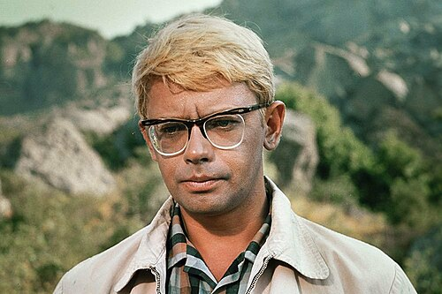
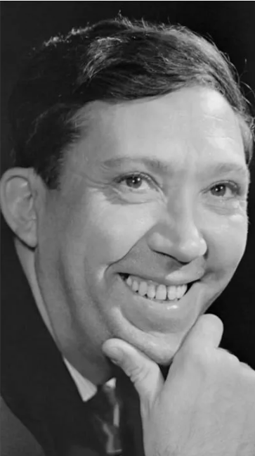
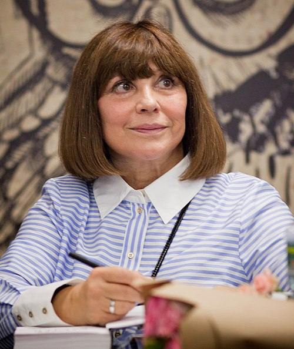
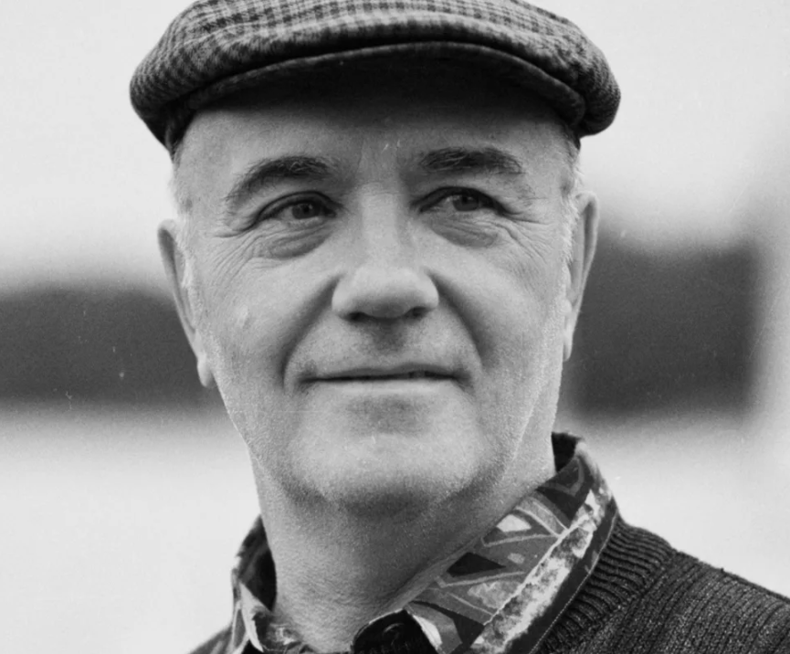
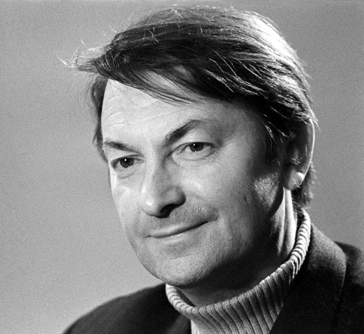

В фильмах Леонида Гайдая снимались легендарные актёры, которые стали символами советской комедии.

Исполнитель роли Шурика — одного из самых любимых персонажей советского кино. Символ интеллигентного героя комедий Гайдая.

Великий комик и актёр, сыгравший в «Бриллиантовой руке» и других культовых фильмах Гайдая.

Исполнительница роли Нины в «Кавказской пленнице». Одна из самых популярных актрис советского кино.

Сыграл яркие комедийные роли в фильмах Гайдая, включая «Иван Васильевич меняет профессию».

Легендарный актёр комедийного жанра, участник знаменитой троицы (Трус, Балбес, Бывалый).